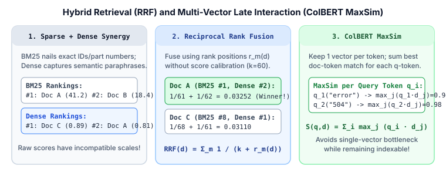

3. Hybrid Retrieval (Reciprocal Rank Fusion) & Multi-Vector Late Interaction (ColBERT)
Single-vector dense bi-encoders excel at semantic paraphrases, but they frequently fail on rare product SKUs, error codes ("ERR_SSL_PROTOCOL_ERROR"), and out-of-domain entities because cramming an entire $300$-word passage into one vector loses fine token details. Production search systems solve this in two ways: Hybrid Retrieval (combining BM25/SPLADE with Dense ANN via Reciprocal Rank Fusion) and Multi-Vector Late Interaction (ColBERT), which retains one contextual vector per token.

1. Hybrid Retrieval: Combining Sparse & Dense Scores
Suppose we retrieve top candidates from both a lexical index (BM25) and a dense vector index (Two-Tower ANN). Why can't we simply add their raw scores $S_{\text{BM25}}(q, d) + S_{\text{Dense}}(q, d)$?
- Unbounded vs. Bounded Scales: BM25 scores range from $0$ to $50+$ depending on query length and term rarity, whereas cosine similarities lie in $[-1, 1]$.
- Query-Dependent Variance: Min-max normalizing scores per query ($\tilde{s} = \frac{s - s_{\min}}{s_{\max} - s_{\min}}$) is brittle when one retriever has an outlier top hit or returns mostly noise.
Reciprocal Rank Fusion (RRF)
Proposed by Cormack et al. (2009), Reciprocal Rank Fusion (RRF) discards raw scores entirely and fuses $M$ ranked lists using only each document's $1$-based rank position $r_m(d) \in \{1, 2, \dots\}$ in retriever $m$:
If document $d$ is not retrieved by list $m$, its contribution from list $m$ is $0$. The smoothing constant $k$ (almost universally set to $k = 60$) prevents a #1 rank in a single noisy retriever ($\frac{1}{1} = 1.0$) from overpowering a document that ranks consistently well (#2 or #3) across both lexical and semantic retrievers.
2. ColBERT: Multi-Vector Late Interaction (MaxSim)
Why does a single-vector bi-encoder struggle with exact phrases and multi-aspect queries? Because pooling all $L_d$ document token states into a single vector $v \in \mathbb{R}^d$ acts as an information bottleneck.
ColBERT (Contextualized Late Interaction over BERT, Khattab & Zaharia, 2020) keeps one low-dimensional vector per token ($d = 128$ or $32$, compressed to $2$ bits in ColBERTv2 / PLAID):
At query time, ColBERT scores document $D$ using the MaxSim (Maximum Similarity) operator: for each query token vector $q_i$, find its highest dot product with any token vector $d_j$ in the document, and sum those maxima over all query tokens:
Why is MaxSim so effective?
- Token-Level Precision: Each query token $q_i$ independently verifies whether its specific concept or identifier appears somewhere in document $D$.
- Offline Indexing: Unlike a Cross-Encoder (which requires query-document cross-attention inside the Transformer layers), ColBERT's document token vectors $\{d_1, \dots, d_n\}$ depend only on the document and are precomputed and indexed offline.
3. Worked Numerical Example: RRF & ColBERT MaxSim
Part A: Reciprocal Rank Fusion ($k = 60$)
Suppose a user searches for "PostgreSQL error 53300 too many connections". Let us trace RRF across three candidate documents:
| Document | BM25 Rank $r_{\text{BM25}}$ | Dense Rank $r_{\text{Dense}}$ | BM25 RRF Term $\frac{1}{60 + r_1}$ | Dense RRF Term $\frac{1}{60 + r_2}$ | Total $\text{RRF}(d)$ |
|---|---|---|---|---|---|
| Doc AExact error + fix guide | Rank $2$ | Rank $2$ | $1 / 62 = 0.01613$ | $1 / 62 = 0.01613$ | $0.03226$ (Rank 1) |
Doc BRaw log dump w/ 53300 |
Rank $1$ | Rank $15$ | $1 / 61 = 0.01639$ | $1 / 75 = 0.01333$ | $0.02972$ (Rank 2) |
| Doc CGeneric DB pooling blog | Rank $12$ | Rank $1$ | $1 / 72 = 0.01389$ | $1 / 61 = 0.01639$ | $0.03028$ (Rank 2/3) |
Even though Doc A was #2 in both individual retrievers, RRF promotes Doc A to #1 overall ($0.03226$) because it satisfies both exact lexical matching (53300) and semantic intent.
Part B: ColBERT MaxSim Matrix
Suppose query $Q$ has $m = 3$ tokens $[q_1=\text{"error"},\; q_2=\text{"53300"},\; q_3=\text{"pool"}]$ and document $D$ has $n = 4$ tokens $[d_1=\text{"postgres"},\; d_2=\text{"code"},\; d_3=\text{"53300"},\; d_4=\text{"pgbouncer"}]$. Given the $3 \times 4$ token dot-product matrix $\langle q_i, d_j \rangle$:
- Row 1 ($q_1=\text{"error"}$): $[0.20,\; \mathbf{0.81},\; 0.15,\; 0.10] \;\Rightarrow\; \max_j = \mathbf{0.81}$ (matches
"code"). - Row 2 ($q_2=\text{"53300"}$): $[0.05,\; 0.12,\; \mathbf{0.97},\; 0.04] \;\Rightarrow\; \max_j = \mathbf{0.97}$ (matches
"53300"). - Row 3 ($q_3=\text{"pool"}$): $[0.31,\; 0.08,\; 0.02,\; \mathbf{0.86}] \;\Rightarrow\; \max_j = \mathbf{0.86}$ (matches
"pgbouncer").
Summing the row-wise maxima yields $S_{\text{ColBERT}}(Q, D) = 0.81 + 0.97 + 0.86 = \mathbf{2.64}$.
4. Minimal Python Implementation
import numpy as np
def reciprocal_rank_fusion(ranked_lists: list[list[str]], k: int = 60) -> list[tuple[str, float]]:
"""Fuse multiple ranked lists of doc_ids using RRF(d) = sum 1 / (k + rank)."""
scores: dict[str, float] = {}
for rlist in ranked_lists:
for rank_0, doc_id in enumerate(rlist):
rank_1 = rank_0 + 1 # 1-based rank
scores[doc_id] = scores.get(doc_id, 0.0) + 1.0 / (k + rank_1)
return sorted(scores.items(), key=lambda x: x[1], reverse=True)
def colbert_maxsim(q_tokens: np.ndarray, d_tokens: np.ndarray) -> float:
"""
q_tokens: [m, dim] L2-normalized query token embeddings
d_tokens: [n, dim] L2-normalized document token embeddings
"""
sim_matrix = q_tokens @ d_tokens.T # [m, n] all-pairs token dot products
return float(np.sum(np.max(sim_matrix, axis=1)))
# Verify RRF example
bm25_list = ["DocB", "DocA", "DocD", "DocE", "DocF", "DocG", "DocH", "DocI", "DocJ", "DocK", "DocL", "DocC"]
dense_list = ["DocC", "DocA", "DocD", "DocE", "DocF", "DocG", "DocH", "DocI", "DocJ", "DocK", "DocL", "DocM", "DocN", "DocO", "DocB"]
print("Top-3 RRF:", [(d, round(s, 5)) for d, s in reciprocal_rank_fusion([bm25_list, dense_list])[:3]])